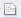

The Weather Text Product Control is used to display weather text products (forecasts, warnings, watches, etc.) produced by the National Weather Service and other international meteorological agencies. The Weather Text Product Display is accessed through the Main Display window via Tools->Text Data->Weather Text Products(from server). The user interface consists of three tabs, Products, Display, and Locations.
The Products tab selects and displays the text products. When a product is selected, the available stations are plotted in the Main Display window. One or more stations can be selected by clicking on the station in the Main Display window (or Ctrl+click for multiple stations). When a station is selected, the text product for that station is displayed in the Weather Text Product Display:

Image 1: Weather Text Product Display in the Text View
- Find - Searches for the text string.
- Find Next - Finds the next occurrence of the searched for text string.
- Find Previous - Finds the previous occurrence of the searched for text string.
-  Highlight All - Highlights all occurrences of the text string. When all items are highlighted in the text, this button will change from white to yellow.
- Match Case - Finds only items in the text that match the case of the entry in the Find field.
By default, the text product is displayed as raw text. Click on the HTML tab at the bottom of the display window to view the product in HTML.
Image 2: Weather Text Product Display in the HTML View
- Show Glossary - Toggles a glossary which will highlight certain terms in the text. When the links are clicked, a dialog will pop up with an explanation of the term.
By default, the most recent text product is displayed. Previous versions of the products can be displayed by selecting a time range from the Time Covered drop-down list. Use the Time Animation Widget to loop through multiple products. The time animation will be synced with any other data in the Main Display window.
The Display tab controls the display of the station locations in the Main Display window:

Image 3: Display Tab of the Weather Text Product Display Window
- Declutter - Displays only stations that do not overlap. When unchecked, all of the stations will be shown. The icon allows for locking the stations that are currently being displayed and not have their display changed when navigating.
- Density - Changes how dense the display of stations is when decluttering. More stations will appear in the Main Display window with a higher Density value. This option is only available if the Declutter checkbox is selected.
- Display - Displays locations as a fixed specification of a symbol and/or an identifier or as one of the available layout models.
- Use the options under the Predefined radio button to control what station information is displayed. Use the options in the Symbol panel to control what marker symbol is displayed. Clicking an item will immediately change the display. Use the Visible checkboxes to trigger the visibility of the ID or Symbol in the Main Display window. Color sets the color of the Symbol and ID in the Main Display window.
- When the Layout Model radio button is selected the layout model facility is used to display the location. The Layout Model Editor can be opened by clicking the
 Edit icon.
Edit icon. - Vertical Position - Displays the locations at their altitude (if there is one) or specifically defines the vertical position for all stations. This can be changed by using the slider or entering a value into the field.
The Locations tab lists information about the selected location and shows lists of all the locations and the locations currently visible in the Main Display window:

Image 4: Displayed Locations Tab in the Locations Tab of the Weather Text Product Display Window
- All Locations - Lists all of the locations relevant to the chosen parameter.
- Displayed Locations - Lists only the locations that are currently visible in the Main Display window.
- Listen for clicks - Updates the current location information to the station selected in the Main Display window.
- Center on selected - Centers the Main Display window over the location selected in this tab. This only works if Listen for clicks is selected.
Many of the menu items seen utilizing this display are standard options that can be found in the Menus section of the Layer Controls page. However, there are some options that are unique to this display.
The Edit menu has these unique options:
- Add Locations - Adds the locations of a variety of features, including city labels, states, oceans, earthquakes, etc. to the display.
- Color - Changes the color of the location labels in the Main Display window.
The View menu has these unique options:
- Show Flythrough - Opens the Flythrough feature which allows for interactively exploring the display.
- Use Projection From Locations - Re-centers the display and resets the zoom level back to the display's initial settings without changing any other preferences that have been modified.
- Chart - Allows for displaying a thumbnail of the chart in the Legend, change the Grid Layout, zoom in and out, save the chart, and open the Plot Properties window.
- Show Raw Data - Displays the data in its raw format in the chart before any rounding/formatting is done to the data by McIDAS-V.